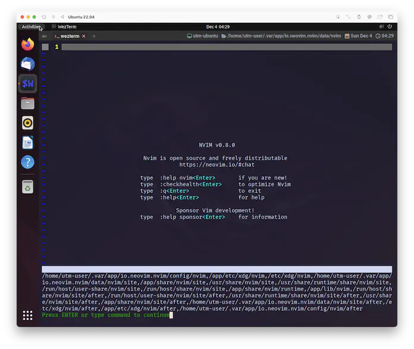
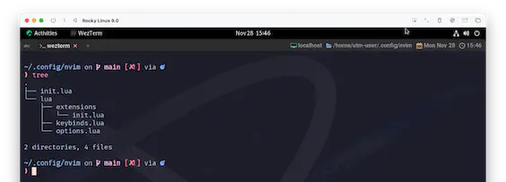
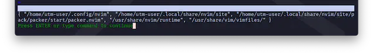
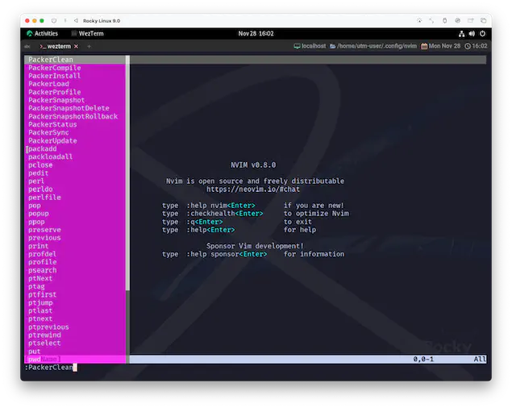
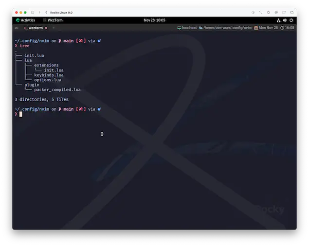
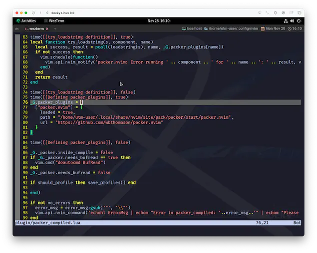
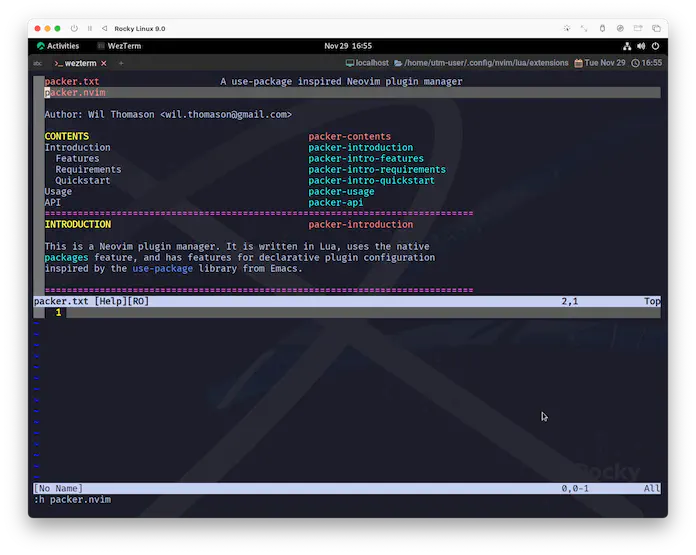
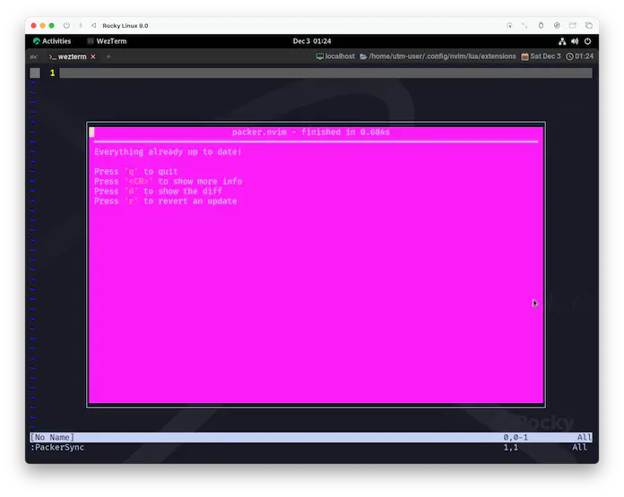
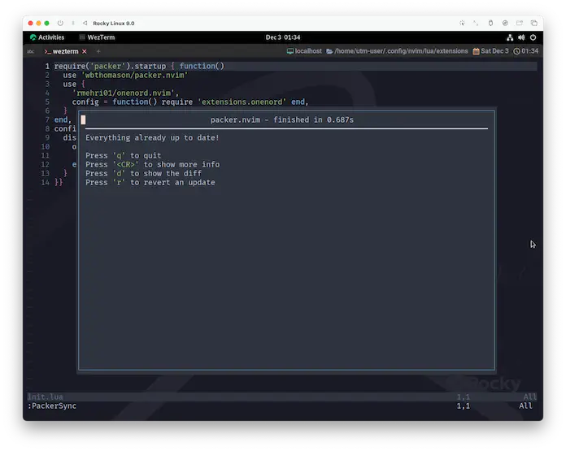

packer.nvim
では早速ですが、まずはプラグイン/パッケージマネージャーからいきます。
マネージャーだったりお作法だったりは色々あるんですが、わたしはpacker.nvimを愛用しています😆
use-package inspired plugin/package management for Neovim.
use-packageにインスパイアされたNeovimのプラグイン/パッケージマネージャー。
Packer is built on native packages. You may wish to read :h packages before continuing
Packerはネイティブパッケージの上に構築されています。先に進む前に :h packages を読んでおくとよいでしょう。
- You need to be running Neovim v0.5.0+;
packermakes use of extmarks and other newly-added Neovim features. - Your version of Neovim must be compiled with LuaJIT support;
packerrelies on this to detect whether you are running Windows or a Unix-like OS (for path separators) - If you are on Windows 10, you need developer mode enabled in order to use local plugins (creating symbolic links requires admin privileges on Windows
- credit to @TimUntersberger for this note)
Neovim v0.5.0以降とLuaJITについては、ここまで来て今更問題にはならないと思われますが、
Windows 10で動かす場合には別途操作が必要になるみたいです。(自信がないので触れられない...😰)
例えば、同じように「パッケージマネージャー」と呼ばれるHomebrewやapt、dnfなんかだと、
install あれと唱えるだけで、動作に必要な依存関係と照らし合わせて、不足しているソフトやライブラリまでも自動でインストールしてくれますが、
Neovimプラグインはそういった依存関係をデータとしては持ち合わせていないので、作者の説明を見て自分で把握しないといけないんですね。
なので、どのプラグインであってもRequirementsは必ず確認するようにしてください。重要だぞ😉❤️
「とにかく動かしてみたいから、細かい話はあとだー❗」ってなっちゃうわたしが言うのも変ですが、まあ焦らず進めましょう☺️
Download
それでは、ターミナルから手動でgitを使い、packer.nvimを所定のディレクトリ(packpathのいずれか)に配置します。
"Quickstart" にあるように、順を追ってやっていきましょう。
Unix, Linux Installation
git clone --depth 1 https://github.com/wbthomason/packer.nvim ~/.local/share/nvim/site/pack/packer/start/packer.nvim
Windows Powershell Installation
git clone https://github.com/wbthomason/packer.nvim "$env:LOCALAPPDATA\nvim-data\site\pack\packer\start\packer.nvim"
わたしの環境では "/home/utm-user/.local/share/nvim/site" がpackpathに含まれていたので、例示されているパスのままで進めていますが、
環境によってはこのパスが含まれていないかもしれません。
(仮想環境ではあるんですが)Ubuntu Server for ARMではaptからインストールできるNeovimのバージョンが異様に低かったので
flatpakを使ったら、「なにこれマルチバース❓」って言うぐらいマッドネスなpackpathでした。もはや "panicpath" です🤣
...ただ、話がわかっていればこんなの適合させるぐらい簡単ですよね〜😉 packpathを確認の上で合わせてあげてください。

# あくまで一例です。
git clone --depth 1 https://github.com/wbthomason/packer.nvim ~/.var/app/io.neovim.nvim/data/nvim/site/pack/packer/start/packer.nvim
っていうか、これだとそもそも設定ファイルの場所も違うんですね...。
設定ファイル
ここからはわたしのやり方を並べていくんですが、まずは設定ファイルを新しく作りましょう。
luaディレクトリに新しくextensionsディレクトリを作成します。
で、その中にinit.luaを作っちゃいましょう。
この時点でのディレクトリ構成はこんな感じですね。

それじゃあnvim直下のinit.luaから呼び出してあげましょう。(今作ったやつではなく、前からいるやつです。)
optionsとかkeybindsを呼び出しているところに並べてあげてください😄
起動
ここまでを行った状態でnvimを起動すると...❓何も起きませんね😮
ちなみに、今の状態で
ってやってみると、
...なんか前より増えてますよね。...って❗しれっとpacker.nvimいるし⁉️
On startup after processing your |config|, Nvim scans all directories in
'packpath' for plugins in "pack/*/start/*", then loads the plugins.
Nvim は起動時に |config| を処理した後、'packpath' にある全てのディレクトリをスキャンして
"pack/*/start/*" にあるプラグインを探し、プラグインを読み込ませます。
To allow for calling into package functionality while parsing your |vimrc|,
|:colorscheme| and |autoload| will both automatically search under 'packpath'
as well in addition to 'runtimepath'. See the documentation for each for
details.
|vimrc| を解析している間にパッケージの機能を呼び出せるように、
|:colorscheme| と |autoload| は自動的に 'runtimepath' だけでなく 'packpath' の下も検索する。
詳しくはそれぞれのドキュメントを参照のこと。
入ってるならじゃあ...ってことで、コマンドモードでpTabとぽちぽち入力してみましょう。すると...❓

見た目はちょっと Poison☠️ ですが、何やらPackerを名乗るコマンドが候補に上がってきましたね❗確かにインストールできてそうな気配です😆
せっかくなので、PackerCompileを選んで実行してみましょう...❗
...。
何も起きませ...いや、ちょっと待って❗
なんだかnvim/pluginディレクトリと、その中にpacker_compiled.luaが生成されています😮

このファイルはpacker.nvimが管理してくれるので触らなくていい (というか、触ってはいけない) のですが、ちょっとだけ中を見てみましょう。

わたしがそこまで意味を分かっているわけではないので、ふわっとだけ触れますが、
_G.packer_plugins = {
["packer.nvim"] = {
loaded = true,
path = "/home/utm-user/.local/share/nvim/site/pack/packer/start/packer.nvim",
url = "https://github.com/wbthomason/packer.nvim"
},
なんかこんなのがいますよね。
このpacker_pluginsの中に、use {}で指定したプラグインが:PackerCompileによって、どんどん追加されていきます。
そう❗要するに便利ってことです😆
Command
packer.nvimはプラグインのアップデートなども含めてマネージメントしてくれます☺️
PackerCompile
You must run this or `PackerSync` whenever you make changes to your plugin configuration regenerate compiled loader file
プラグインの設定を変更したときは、必ずこのコマンドか`PackerSync`を実行しなければなりません。
コンパイル済みのローダーファイルを再生成します。
PackerClean
Remove any disabled or unused plugins
無効または未使用のプラグインを削除します。
PackerInstall
Clean, then install missing plugins
無効になっているプラグインを削除し、インストールします。
PackerUpdate
Clean, then update and install plugins
supports the `--preview` flag as an optional first argument to preview updates
クリーンアップの後、プラグインをアップデートしてインストールします。
アップデートをプレビューするためのオプションの第一引数として `--preview` フラグをサポートします。
PackerSync
Perform `PackerUpdate` and then `PackerCompile`
supports the `--preview` flag as an optional first argument to preview updates
`PackerUpdate`と`PackerCompile`を実行します。
アップデートをプレビューするためのオプションの第一引数として `--preview` フラグをサポートします。
PackerStatus
Show list of installed plugins
インストールされているプラグインのリストを表示します。
PackerLoad
Loads opt plugin immediately
optプラグインをすぐにロードする
Help
Neovimプラグインの場合は、作者が書いてくれているreadmeを見れば、もうこれだけで済んでしまうことも多いんですが、
(大抵は)NeovimのHelpにもプラグイン固有の説明が追加されます。

Floating Window
これは完全に見た目だけのお話なんですが、こんなのがあります。
You can configure Packer to use a floating window for command outputs by passing a utility function to packer's config:
Packer の config にユーティリティ関数を渡すことで、コマンド出力にフローティングウィンドウを使用するように設定することができます。
少しコードを変えてしまうんですが、extensions/init.luaを以下のようにしてみましょう。
require('packer').startup { function() -- '(' から '{' に変わってます
use 'wbthomason/packer.nvim'
end,
config = {
display = {
open_fn = function()
return require('packer.util').float { border = 'single' }
end,
}
}} -- 文法的に当たり前ではあるんですが、ここも ')' から '}' に変わってます
上の例はちょっと変則的なインデントになっちゃってますが、きっちりやるならこうです。お好みで😉
require('packer').startup {
function()
use 'wbthomason/packer.nvim'
end,
config = {
display = {
open_fn = function()
return require('packer.util').float { border = 'single' }
end,
}
}
}

なんていうか...、やっぱ Poison☠️❓
この毒はカラーテーマを入れちゃえば自然と抜けるんで、
わたしとしては「少しの間だけ気にしないで...」と言ってしまいたいところではあるんですが、
「どうしても耐えられない〜❗」っていう場合は、一個飛ばして15.3. onenord.nvimを先にやってもらうと、すぐにいい感じになります。

Wrap up
pakcer.nvimには便利な機能や設定がまだまだあるのですが、
ここで説明だけしてもイメージが掴みにくいと思うので、使用する場面で、その都度注釈を入れていく形にしようと思ってます。